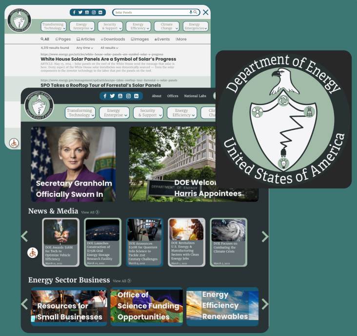
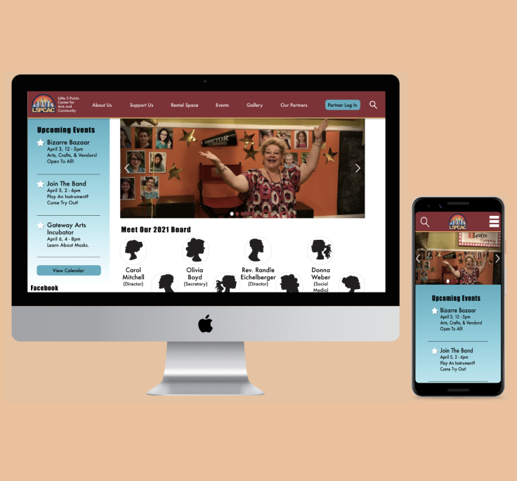
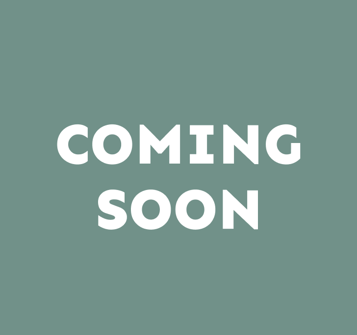

Case Studies
Using Agile techniques and design methodologies,
our teams took on academic and real-world UX
problems, which resulted in a better understanding
of user pain points, design interactions, and how
best to serve both the client and the user.

COVID Crushers Mobile Notification App
In February of 2021, our team realized the State of
Georgia did not have a single platform for Georgians
to find, register, and be notified for COVID-19 vaccines.
Therefore, we set out to make one.
UX Research Project

Department of Energy RWD Redesign
While the Department of Energy has made amazing changes
to its main site, the agency has ignored the searchability
function entirely. With user pain points in hand, we aimed
to correct this.
UX/UI Design Project

Little Five Points Center RWD Redesign
The Little Five Points Center for Arts & Community is reaching
people through Facebook since its website became inaccessible.
As the pandemic is now ebbing, the nonprofit wants to rebrand
and get back on track.
UX/UI Design Project Client: L5PCAC

Coding Project for Bootcamp
This section will be filled out when this project is complete.
Coding Design Project